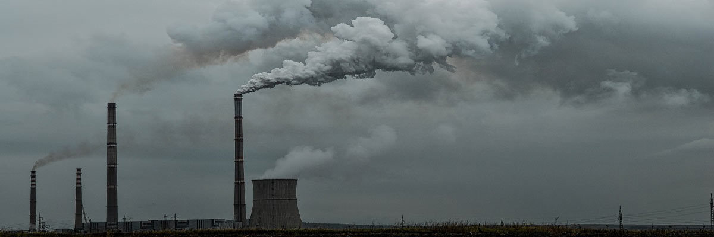

Climate Candidates 2020
The climate platforms of the top five 2020 democratic candidates for presidential democratic nominee listed in order from top to bottom of best climate platform, according to Greenpeace


- Aims to decarbonize transportation and power generation, the two largest sources of emissions, by 2030.
- He voted against the USMCA trade agreement between the United States, Mexico, and Canada because it didn’t mention climate change at all.
- Promises to declare climate change a national emergency and put the Green New Deal into action by investing $16.3 trillion in a 10-year mobilization "that factors climate change into virtually every area of policy." That dollar figure is far higher than what other candidates are proposing.
- Having built his last campaign on small individual donations, Sanders was the first presidential candidate to sign the No Fossil Fuel Funding pledge launched by climate and justice groups in 2016.
- To pay for the Green Deal, Sanders says he would eliminate fossil fuel subsidies, cut back military spending related to oil, increase penalties for power plant emissions, and "massively" raise taxes on fossil fuel income and wealth, among other steps.
- Steyer's campaign published an extensive “Justice-Centered” climate plan that includes a commitment to declare climate change a national emergency and aims for 100 percent clean electricity by 2040 and net-zero greenhouse gas emissions by 2045 across all sectors, including homes and buildings.
- Wants to build a community-based network to inform his policies and a "Civilian Climate Corps" that would be funded with $250 billion in bonds over a decade and create 1 million jobs.
- His plan would commit $50 billion to wages and benefits to help fossil fuel workers to "thrive in a cleaner, more inclusive economy."
- He would eliminate "all forms of government giveaways" to fossil fuel companies, "including unlimited and unpriced global warming pollution."
- $2 trillion over a decade to make infrastructure more climate-friendly and resilient. Half of the total would be focused on cleaner energy, industry and buildings, including modernizing the power grid and reducing methane emissions.
- $775 billion would go into cleaning up transportation, including expanding electric vehicle charging infrastructure, "electrifying every school bus in the country" and improving public transit.
- Warren's plan calls for all new buildings to be zero-emissions by 2028, all electricity to be carbon-neutral by 2030, and all new passenger cars, trucks and buses to be zero emissions by 2030.
- Warren struck early with a pledge in April to prohibit all new fossil fuel leases on public lands.
- $3 trillion package of investment in green research, manufacturing and exporting, all to help "achieve the ambitious targets of the Green New Deal" over the next 10 years.
- $1.5 trillion for American-made clean energy products
- $400 billion in funding for green research and development
- $100 billion in foreign assistance to purchase emissions-free American energy technology. In her plan for environmental justice, Warren said she would direct one-third of her proposed climate investments or "at least $1 trillion" to vulnerable communities most impacted by climate change.
- Agriculture plan to incentivize farmers to invest in sustainable farming practices that reduce carbon emissions, which calls for expanding the voluntary Conservation Stewardship Program from $1 billion to $15 billion annually. Her platform also takes aim at breaking up the mega-mergers of agricultural corporations.
- Her “Blue New Deal” plan for the oceans would fast-track permitting for offshore wind energy while phasing out offshore drilling for oil and gas.
- Warren's plan calls for electrification of ports to reduce local air pollution and greenhouse gas emissions. It also includes a "blue carbon" program that would support natural, ocean-based carbon sequestration projects including those involving coral reefs, mangroves, seagrass beds and wetlands.

- By 2035, he envisions a zero-emissions electricity system and all new passenger vehicles being zero emissions. By 2040, he sees requiring net zero emissions for all new heavy-duty vehicles, buses, trains, ships and aircraft.
- His plan to create 3 million new jobs includes a 10-year, $200 billion commitment to retrain workers displaced in the transition away from fossil fuels. He also has a plan to create a Climate Corps service program focused on helping communities build resilience and sustainability.
- Calls for "quadrupling federal research and development funding" for renewable energy and energy storage, investing $200 billion over 10 years, and spending $550 billion on deploying clean energy technologies.
- He would recommit the U.S. to the Paris climate agreement and revitalize U.S. climate leadership in the Arctic Council "so we can reduce emissions and oppose drilling in that region."
- A former U.S. Naval Reserve officer, Buttigieg wants to increase the military's climate planning and create a senior climate security position in the Defense Department.
- He wants to launch a $250 billion national green bank to funnel financing for clean energy projects into disadvantaged communities "where private capital is reluctant to go," particularly in middle America.
- Would ban all new fossil fuel development on federal lands. He wrote: "I favor a ban on new fracking and a rapid end to existing fracking." He signed the No Fossil Fuel Money Pledge in March

- Biden embraced the Green New Deal as a "crucial framework."
- Biden foresees $1.7 trillion in spending over the next 10 years, and $3.3 trillion in investments by the private sector and state and local governments.
- He wants Congress to pass emissions limits with "an enforcement mechanism ... based on the principles that polluters must bear the full cost of the carbon pollution they are emitting." He said it would include "clear, legally-binding emissions reductions," but did not give details.
- In July, Biden released a policy agenda that aims to boost the rural economy, in part by expanding a program that will pay farmers to use farming techniques that store carbon in the soil.
- His plan also calls for support for economically impacted communities. He was slow to agree with activists' calls for him to swear off campaign contributions from fossil fuel interests, but did sign the No Fossil Fuel Funding pledge on June 27.